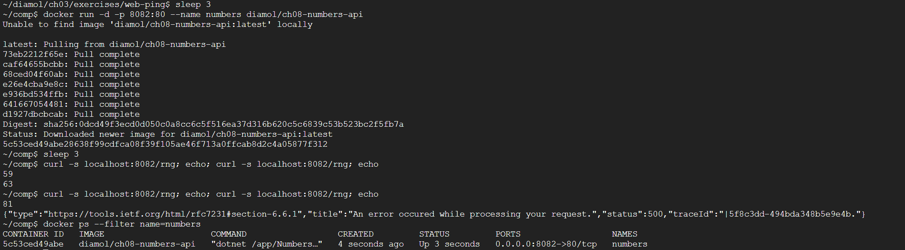
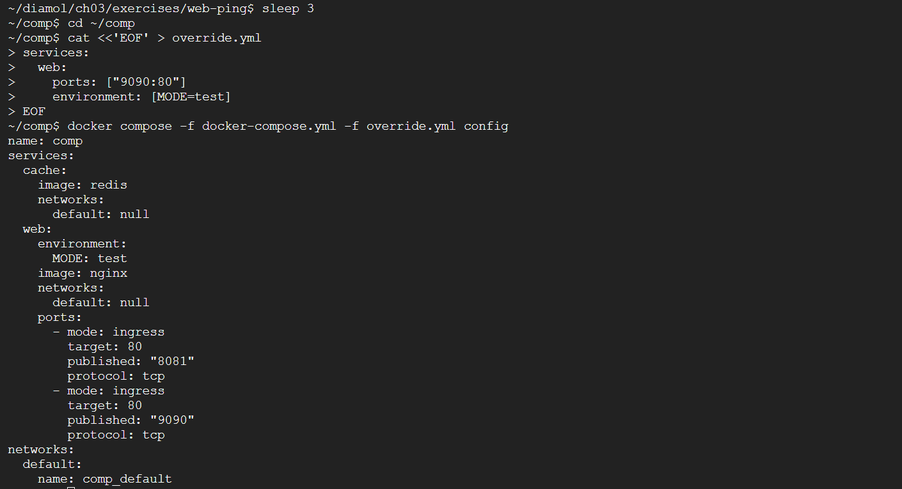

헬스 체크 · 다중 환경 컴포즈 · CI
도커 세 번째 주차. 헬스 체크·디펜던시 체크로 복원력 있는 이미지, 다중 환경 컴포즈(오버라이드·환경변수·비밀값), 도커만으로 굴리는 CI(Gogs·Jenkins·레지스트리) 순서로 실습한다.
기본 상태 확인의 한계
도커는 주 프로세스의 생존만 본다. 프로세스는 살아 있고 내부 로직만 망가지면 컨테이너는 계속 Up으로 보고된다.
docker container run -d -p 8080:80 diamol/ch08-numbers-api # API 컨테이너 실행
curl http://localhost:8080/rng # 호출마다 무작위 숫자 반환
curl http://localhost:8080/rng
curl http://localhost:8080/rng
curl http://localhost:8080/rng # 네 번째부터 실패
docker container ls # 그런데도 상태는 Up

▲ numbers-api는 몇 번 호출 뒤 500 오류를 내지만, 헬스 체크가 없으면 컨테이너 STATUS는 여전히
Up 으로 표시된다.
HEALTHCHECK 인스트럭션
Dockerfile에 HEALTHCHECK를 넣으면 도커가 주기적으로 명령을 실행하고, curl --fail이 실패하면 컨테이너를 unhealthy로 표시한다.
FROM diamol/dotnet-aspnet
ENTRYPOINT ["dotnet", "/app/Numbers.Api.dll"]
HEALTHCHECK CMD curl --fail http://localhost/health
WORKDIR /app
COPY --from=builder /out/ .
cd ./ch08/exercises/numbers
docker image build -t diamol/ch08-numbers-api:v2 -f ./numbersapi/Dockerfile.v2 . # -f로 Dockerfile 지정
docker container inspect $(docker container ls --last 1 --format '{{.ID}}') # Health 상태 확인
상태 전환에는 interval × retries만큼 시간이 걸리므로 망가뜨린 직후 바로 unhealthy가 되지 않는다.
container inspect의 unhealthy 상태
(실습 화면 캡처)
디펜던시 체크
웹은 API가 있어야 동작한다. 시작 전에 의존 대상을 검증해, API의 /rng가 응답하지 않으면 실행 자체를 막는다.
FROM diamol/dotnet-aspnet
ENV RngApi:Url=http://numbers-api/rng
CMD curl --fail http://numbers-api/rng && \
dotnet Numbers.Web.dll
WORKDIR /app
COPY --from=builder /out/ .
앱과 같은 런타임(닷넷)으로 만든 커스텀 유틸리티를 쓰면 curl 추가 설치 없이 복잡한 체크 로직과 크로스 플랫폼을 처리할 수 있다.
컴포즈 헬스 체크·재시작
numbers-web:
image: diamol/ch08-numbers-web:v3
restart: on-failure
ports:
- "8088:80"
healthcheck:
test: ["CMD", "dotnet", "Utilities.HttpCheck.dll", "-t", "150"]
interval: 5s
timeout: 1s
retries: 2
start_period: 10s
networks:
- app-net
test=실행 명령, interval=반복 간격, timeout=실패 판정 대기, retries=연속 실패 횟수, start_period=시작 유예 기간. restart: on-failure는 실패 종료 시 재시작해 자기 수복을 이룬다.
여러 환경 — 프로젝트 이름
같은 컴포즈 파일로 up을 반복해도 컴포즈가 프로젝트 이름 기준으로 기존 컨테이너를 재사용한다. 독립 인스턴스는 -p로 분리한다.
docker-compose -f ./todo-list/docker-compose.yml -p todo-test up -d # 별도 프로젝트로 실행
docker container ls
docker container port todo-test_todo-web_1 80 # 무작위 매핑 포트 확인
오버라이드 파일
-f로 여러 번 지정하면 뒤 파일이 앞 파일을 덮어쓰며 병합된다. 병합 결과는 config로 미리 확인한다.
docker-compose -f docker-compose.yml -f docker-compose-v2.yml config # 병합 결과 출력

▲
docker compose -f base -f override config — 기본 파일과 오버라이드 파일이 병합된 최종 설정(web에 MODE=test·포트 추가)을 확인.
환경 변수와 비밀값
컴포즈는 environment, env_file, ${VAR} 치환, secrets를 지원한다.
docker-compose \
-f ./todo-list-configured/docker-compose.yml \
-f ./todo-list-configured/docker-compose-dev.yml \
-p todo-dev up -d
반복 옵션은 .env로 빼면 명령이 깔끔해진다. 실행 옵션 자체도 .env로 지정한다.
# .env
TODO_WEB_PORT=8877
TODO_DB_PORT=5432
COMPOSE_PATH_SEPARATOR=;
COMPOSE_FILE=docker-compose.yml;docker-compose-test.yml
COMPOSE_PROJECT_NAME=todo_ch10
확장 필드로 중복 제거
x- 접두사 확장 필드와 YAML 앵커(&)·병합(<<: *)으로 한 블록을 여러 서비스에서 재사용한다.
x-logging: &logging
logging:
options:
max-size: '100m'
max-file: '10'
services:
iotd:
ports:
- 8080:80
<<: *logging
cd ./image-gallery
docker-compose -f ./docker-compose.yml -f ./docker-compose-prod.yml config # 확장 필드 펼침 확인
도커/컴포즈로 CI
CI는 빌드·테스트·패키징 모든 단계를 도커가 실행한다. CI 서버에 언어별 도구를 깔 필요 없이 컨테이너만으로 동일하게 다룬다.
깃 서버(Gogs)·CI 서버(Jenkins)·로컬 레지스트리를 모두 컨테이너로 띄운다.
cd ./ch11/exercises/infrastructure
docker-compose -f docker-compose.yml -f docker-compose-linux.yml up -d # 인프라 일괄 실행
docker container ls
Jenkins가 호스트 도커 엔진에 접근하도록 docker.sock을 바인드 마운트한다.
# docker-compose-linux.yml
jenkins:
volumes:
- type: bind
source: /var/run/docker.sock
target: /var/run/docker.sock
Gogs(http://localhost:3000)에 계정·저장소를 만든 뒤 코드를 푸시하면 Jenkins(http://localhost:8080/job/diamol)가 빌드를 시작한다.
git remote add local http://localhost:3000/diamol/diamol.git
git push local # 사용자명 diamol, 패스워드 diamol
Gogs(localhost:3000)와 Jenkins 빌드 로그
(실습 화면 캡처)
빌드 인자와 레이블
Dockerfile에 ARG로 빌드 인자, LABEL로 버전·빌드 정보를 박는다.
cd ./ch11/exercises
docker-compose -f docker-compose.yml -f docker-compose-build.yml build # 두 이미지 빌드
docker image inspect -f '{{.Config.Labels}}' diamol/ch11-numbers-api:v3-build-local # 레이블 확인
docker image build -f numbers-api/Dockerfile.v4 --build-arg BUILD_TAG=ch11 -t numbers-api . # 빌드 인자 직접 지정
로컬 레지스트리 REST API
curl http://registry.local:5000/v2/_catalog # 전체 리포지터리 목록
curl http://registry.local:5000/v2/diamol/ch11-numbers-api/tags/list # 특정 리포지터리 태그 목록
docker.sock을 마운트한 컨테이너는 사실상 호스트 도커 엔진을 전부 제어할 수 있으므로 운영 환경에서는 권한을 최소화한다.
레지스트리 API 응답
(실습 화면 캡처)
막혔던 점
- 앱은 죽었는데 상태가 계속 Up →
HEALTHCHECK CMD curl --fail ...추가. 단interval × retries만큼 기다린 뒤 확인. - 웹이 API 없이 떠서 요청마다 에러 → 시작 명령 앞에 디펜던시 체크(
curl --fail http://numbers-api/rng && ...) 추가. - 같은 앱 두 번 띄웠는데 인스턴스 하나 →
-p로 프로젝트 이름 분리,docker container port로 실제 포트 확인. - Jenkins에서 docker 명령 실패 → 호스트
/var/run/docker.sock을 바인드 마운트(윈도는\\.\pipe\docker_engine).